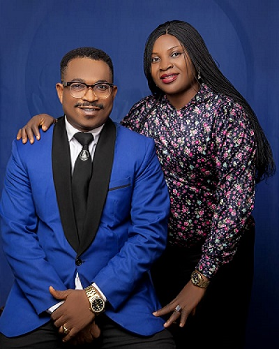

My Biography

Stanley Duke Ngene
I am a Nigerian, married to Sister Precious Ngene, and we sealed our marriage in Aba Nigeria Temple in 2008. So happy because we are bleesed with five children.
Nephi & Fidel-Jackson are boys, Juliet, Success and Emmagold are the girls. I love my family
I joined the Church of Jesus Christ of Latter Day Saints as nobody, and learned that serving other would make me somebody!
Today, BYU-Pathway has opened the portal I wouldn't have been qualified without the restored gospel
I have served as Sunday School President, Elders Quorum President, Branch President, Mission Presidency, and currently a Service Missionary
for BYU-Pathway and Young Single Adults in Enugu Coordinating Council.
I am a public servant in the Nigerian National Security with 15 years of experince in investigation and prosecution of criminal cases,
but plans are on the way to change my job. So, I know that new knowledge in Ai would help navigate through my ways
I love reading books and learning new things, but discovered that all the hidden treasures of knowledge except the scriptures are
technically installed in the computers, hence my desire to start a journey despite my low background in navigating the system.
I invite you to join me in my new world of web development